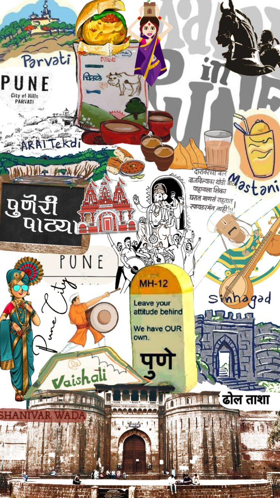
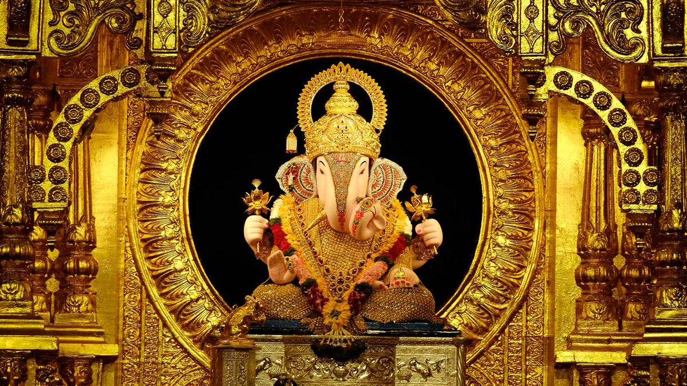

Tourism in Pune
Pune, a vibrant city in Maharashtra, boasts a rich array of historical and cultural attractions. Among its highlights is the Dagdusheth Halwai Ganpati Temple, famed for its magnificent Ganesh idol and its significance as a major pilgrimage site. The Aga Khan Palace stands as a historic landmark with stunning architecture, known for its role in India's freedom struggle, where Mahatma Gandhi and other leaders were imprisoned during the Quit India Movement. Another key attraction is Shaniwar Wada, once the grand seat of the Maratha Empire's Peshwas, whose majestic ruins and lush gardens offer a glimpse into Pune's regal past. These sites, combined with the city's dynamic urban landscape, make Pune a captivating destination for those interested in exploring India's rich history and culture.
Some Historical Details about:
Shreeemant Dagdusheth Temple
Dagdusheth Halwai Ganpati Temple The Dagdusheth Halwai Ganpati Temple was established in 1893 by Dagdusheth Halwai, a prominent sweet-maker in Pune. This temple is renowned for its grand Ganesh idol, which is adorned with jewels and considered to be highly revered among Ganesh devotees. The temple has become a major pilgrimage site, especially during the Ganesh Chaturthi festival when thousands of devotees flock to offer their prayers. Its historical significance also lies in its role as a symbol of the city's rich cultural heritage and the philanthropic spirit of its founder, who dedicated the temple to the community.
Aga Khan Palace
The Aga Khan Palace was built in 1892 by Sultan Mohammed Shah Aga Khan, the then Aga Khan and the leader of the Ismaili Muslim community. This grand palace is noted for its Italianate arches and spacious lawns. It gained historical prominence during the Indian independence movement when Mahatma Gandhi, his wife Kasturba Gandhi, and other leaders were imprisoned here from 1942 to 1944. The palace served as a pivotal site for political activity and struggle during the Quit India Movement. Today, it houses a museum dedicated to Gandhi and his legacy, offering insights into his life and the freedom struggle
Shaniwar Wada
Shaniwar Wada was built in 1732 by Peshwa Bajirao I, the Prime Minister of the Maratha Empire. This fortification served as the political and administrative headquarters of the Maratha rulers for several decades. Known for its grand architecture, including imposing gates and lush gardens, Shaniwar Wada was a symbol of Maratha grandeur. In 1828, a devastating fire ravaged the structure, leaving behind the ruins that stand today. Despite the destruction, Shaniwar Wada remains an important historical site, reflecting the architectural and cultural legacy of the Maratha Empire.
Torna Fort
Torna Fort, also known as Prachandagad, is one of the oldest forts in Maharashtra, built in the 13th century by the Maratha king Chhatrapati Shivaji Maharaj. The fort is perched on a prominent hilltop, offering panoramic views of the surrounding Sahyadri mountain range. Torna Fort played a significant role in Shivaji Maharaj's early conquests and his efforts to establish the Maratha Empire. The fort is notable for its historical importance and is a popular destination for trekkers seeking to explore its ancient ruins and enjoy the breathtaking landscapes.
Tikona Fort
Tikona Fort, located in the Pune district, is renowned for its triangular shape, which gives it its name 'Tikona,' meaning 'triangular' in Marathi. Built during the 8th century, this fortification was strategically important due to its elevated position, which provided a commanding view of the surrounding areas. The fort is known for its well-preserved structures, including the water cisterns, and its role in various historical battles. Tikona Fort is a favorite among hikers for its relatively easy trekking route and its stunning panoramic views of the Western Ghats and the Pawna Dam.
Rajgad Fort
Rajgad Fort, established in 1656 by Chhatrapati Shivaji Maharaj, was one of the Maratha Empire's first and most important forts. It served as the capital of the Maratha kingdom for nearly 26 years before the capital was moved to Raigad. The fort is notable for its extensive fortifications, including several gates, bastions, and a network of water reservoirs. Rajgad Fort's strategic location and its role in the Maratha Empire's administration make it a significant historical site. Today, it is a popular trekking destination, offering a glimpse into Maratha history and providing stunning views of the surrounding landscape.
Gallery


